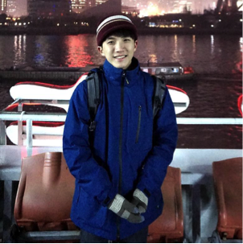

主題說明
一個由大量CSS3加上少量html與javascript控制的網頁，內有許多圖片可查看
程式說明
關於老師的作業要求和此程式對應的部分如下：
1.滑鼠移上去會產生變化：
除了火箭以外，所有的圖片在移上去時皆會產生放大的效果
2.陰影特效：
中心的黃色圓形div使用了陰影特效
3.圓角邊框：
中心的黃色div與兩顆星球圖片皆套用了圓角邊框的效果
4.多重背景：
火箭的部分使用了多重背景，將小綠人與火箭前後疊在一起達到想要的效果
5.物體週期規律移動：
火箭與星球皆使用了setInterval方法讓其能達到規律性的移動或自轉公轉的效果
6.物體前後層次：
星球與火箭或人造衛星等重疊時，分別營造出火箭在星球前
、人造衛星再星球後的層次感
最後這次的網頁除了說明頁的背景外，其餘圖片皆是使用家中大姐的作品學習心得
這次的作業將好久沒使用的CSS拿出來用了！
又稍微重新去複習跟習慣一下子
最明顯的不適感就是再CSS的語法如果有錯時
卻不會跳出錯誤訊息，所以要小心的檢查才行
點擊以下此圖可連結到老姐的美術作品
個人簡介
|

|
-姓名：黃令傑 |
| -系級：資管三A |
| -出生地：台灣 |
| -興趣：看影集、了解新的科技技術 |